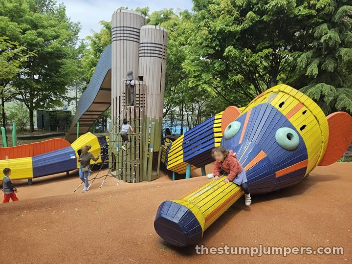
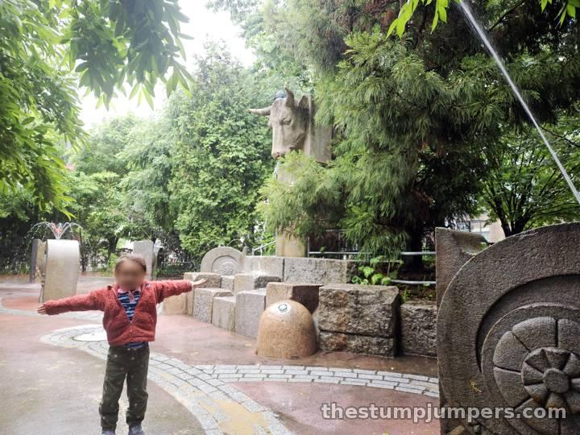
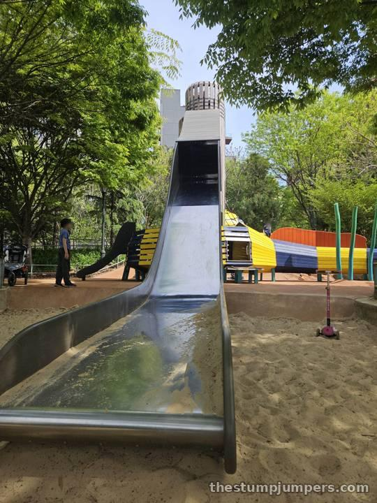
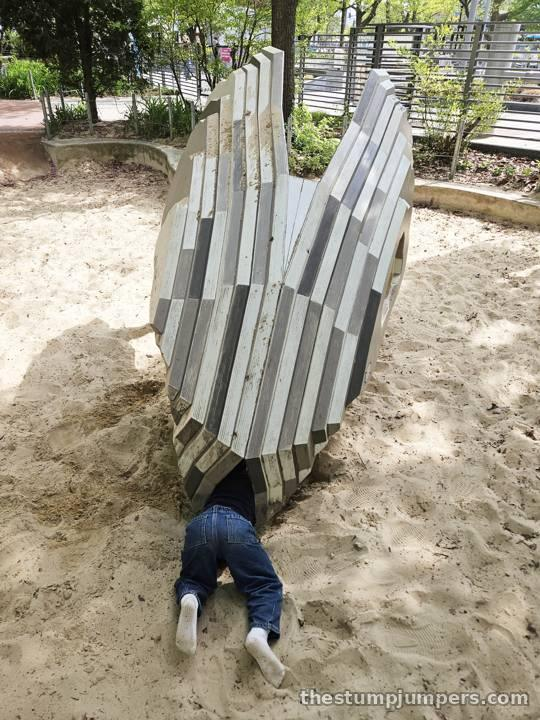

I'll just say it up front: this is one of my favorite playgrounds of all time, and a real hidden gem. It's mostly locals, plus the occasional line of daycare kids from Chelsea Piers, and it rarely feels overrun.

The centerpiece is a giant, colorful wooden pipefish (a real Hudson River species) coiled around a tower. Inside that tower is one of the tallest slides in the city, and definitely the fastest. I've watched plenty of confident kids reach the top, look down, and quietly take the stairs back. The fish comes from the same Danish company that built the sturgeon at the Science Playground on Pier 26. It's a little older, so it's in slightly rougher shape, but it's holding up well.

The splash pad is a bit different from the usual, with big stone bull heads that spout water and little snail jets for the toddlers. Those bulls are real limestone carvings salvaged from an old Hell's Kitchen slaughterhouse, which is exactly the kind of history that makes a playground stick with you.

My only beef is the name. Chelsea Waterside isn't actually on the water. It's near the water: you have to cross 12th Avenue and walk a bit more to reach the river. Maybe that's why it stays a secret — the name sends people looking in the wrong place.
The bathroom is just outside the playground gate, which every parent will appreciate. Verdict: high ratings across the board. It's a hidden gem if you live nearby, and worth the trip if you don't.
By bike: hop off the Hudson River Greenway at 23rd Street and cross 12th Avenue. On the run: a great turnaround point for a Greenway run. By train: C or E to 23 St, or the 7 to 34 St–Hudson Yards, then walk west. The M23 Select Bus stops at the corner.